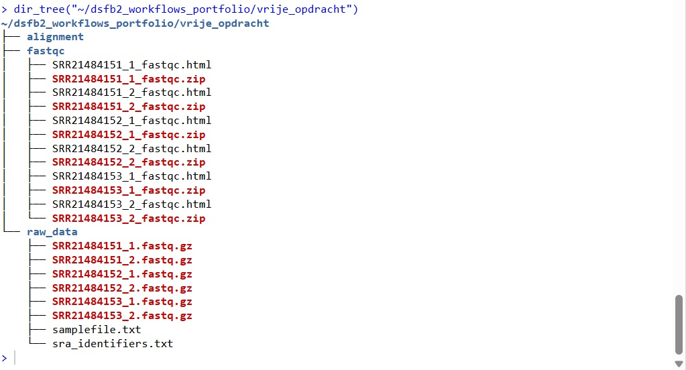

4 Vrije opdracht: DNA-methylatie analyse
4.1 Onderbouwing
Voor de vrije opdracht wil ik kijken naar de analyse van een DNA-methylatie dataset. Dit omdat ik DNA- en eiwittechnieken interessant vind om te doen en me meer wil verdiepen in de analyse van grootschalige DNA datasets. Daarnaast werken bedrijven die mijn interesse hadden getrokken als potentiële stageplaats met DNA-methylatie assays.
Zie ook het plan voor de toekomst voor een uitgebreidere onderbouwing.
4.2 Planning
Ik wil de opdracht gaan uitvoeren door te zoeken naar artikelen en/of Youtube tutorials waarin wordt uitgelegd hoe een DNA-methylatie assay wordt geanalyseerd met behulp van R. Hierdoor hoop ik een goed beeld te krijgen van hoe de analyse uitgevoerd moet worden en of er verschillende mogelijkheden zijn om een DNA-methylatie analyse uit te voeren. Hierna wil ik op zoek gaan naar een artikel met een DNA-methylatie dataset om zelf een DNA-methylatie analyse op uit te voeren.
| Datum | Taak | Tijd |
|---|---|---|
| 12-11-2025 | Keuze onderwerp vrije opdracht | 1 uur |
| 16-11-2025 | Opstellen onderbouwing voor keuze | 2 uur |
| 29-12-2025 | Planning maken | 2 uur |
| 29-12-2025 | Artikelen/Youtube tutorials zoeken | 3 uur |
| 29-12-2025 / 30-12-2025 | Artikelen/Youtube tutorials doornemen | 8 uur |
| 3-1-2026 | DNA methylatie dataset zoeken | 3 uur |
| 3-1-2026 / 4-1-2026 | DNA methylatie analyse uitvoeren op gevonden dataset | 10 uur |
| 4-1-2026 | Uitwerking/opmaak | 3 uur |
4.3 Uitwerking
In verband met het uitvoeren van de vrije opdracht als laatste deel van het portfolio en daardoor geen tijd voor uitloop in combinatie met het lang duren van de data loading en alignment, is het niet gelukt om de analyse volledig uit te voeren. De analyse is tot de alignment op de server uitgevoerd, de benodigde stappen na uitvoering van de alignment zijn hieronder uitgeschreven maar niet gerund. Doordat de server moeite heeft met de grote bestanden lukt het niet om het uitgevoerde deel van de analyse naar GitHub te pushen, en zal in plaats daarvan een screenshot van de mapstructuur worden toegevoegd.
Om de DNA-methylatie analyse te leren heb ik H10: DNA methylation analysis using bisulfite sequencing data van https://compgenomr.github.io/book/bsseq.html gelezen.
Voor het uitvoeren van de analyse is gekozen voor een dataset waarin een whole-genome bisulfite sequencing is uitgevoerd op lipweefsel. Het doel van het onderzoek is om te bepalen of er een relatie bestaat tussen veranderingen in DNA-methylatie en schisis. Het onderzoek is te vinden op https://doi.org/10.1002/bdr2.2102. De data is verkregen via https://www.ncbi.nlm.nih.gov/sra/PRJNA877826.
De data is eerst gedownload op de server:
# sra-tools already installed in rnaseq environment
# conda create -n rnaseq sra-tools
conda activate rnaseq
# Download data files
fasterq-dump SRR21484149 --split-3 --outdir 'vrije_opdracht/raw_data'
conda deactivateEr is begonnen met het laden van de data op 31-12 rond 11:30 uur. Op 3-1 rond 11:00 uur is de data nog steeds aan het laden in de folder. Run SRR21484149 lijkt geskipt en run SRR21484150 is een veel kleiner bestand dan de daarop volgende bestanden, en lijkt dus niet volledig te zijn geladen. Op het moment van schrijven lijken de runs SRR21484151 t/m SRR21484155 goed te zijn geladen. In verband met beperkte overgebleven tijd en het vollopen van de server met zeer grote bestanden zijn enkel run SRR21484151 t/m SRR21484153 bewaard voor verdere analyse. Sowieso verbaast het me dat er alsnog meerdere runs gezipt in de map terecht komen terwijl ik de fastq-dump heb afgebroken en ben gewisseld naar de fasterq-dump.
Op de bestanden is een kwaliteitscontrole uitgevoerd met fastqc.
# fastqc already installed in fastqc environment
conda activate fastqc
# Perform fastqc
fastqc --outdir ./vrije_opdracht/fastqc/ ./vrije_opdracht/raw_data/*.fastq.gz
conda deactivateVervolgens is een alignment uitgevoerd. Hiervoor is gekozen voor QuasR omdat dit programma gebruik maakt van R. De volgende stappen zijn gebaseerd op het vignette voor QuasR (https://bioconductor.org/packages/release/bioc/vignettes/QuasR/inst/doc/QuasR.html). Als referentiegenoom is gekozen voor het hg38 genoom. Om de resultaten van de alignment te verbeteren kan ervoor worden gekozen om de reads eerst te trimmen. In verband met beperkte tijd is het trimmen hier overgeslagen.
# Install QuasR
# BiocManager::install("QuasR")
# Install reference genome
# BiocManager::install("BSgenome.Hsapiens.UCSC.hg38")
samples <- "vrije_opdracht/raw_data/samplefile.txt"
hg38_index <- "BSgenome.Hsapiens.UCSC.hg38"
# Run genome alignment
alignment <- qAlign(samples, hg38_index, bisulfite = "undir", alignmentsDir = "vrije_opdracht/alignment")In de onderstaande afbeelding is te zien tot hoever de analyse op de server is uitgevoerd. De rest van de analyse is vanwege de beperkte tijd en lange duur van de voorgaande stappen niet uitgevoerd, maar wel hieronder uitgeschreven en overgenomen voor een volledig beeld van de analyse.

Na het uitvoeren van de alignment kan de methylatie-fractie worden bepaald.
# Run quantification of methylation analysis
meth_quant <- qMeth(alignment, collapseBySample = TRUE)
perc_meth <- mcols(meth_quant)[,2] * 100 / mcols(meth_quant)[,1]
summary(perc_meth)De volgende stappen zijn gebaseerd op https://compgenomr.github.io/book/bsseq.html. De methylation call files worden eerst ingelezen in een methylRawList object:
# Install methylKit
# BiocManager::install("methylKit")
# Create methylRawList
methRawList=methRead(file.list,
sample.id=list("test1","test2","test3"),
assembly="hg38",
treatment=c(1,1,1),
context="CpG"
)Vervolgens wordt de data op kwaliteit gecontroleerd. Hiervoor wordt bekeken of de data bimodaal verdeeld is en of er basen zijn met een abnormaal hoge coverage.
# Check data for bimodal distribution
getMethylationStats(methRawList[[2]],plot=TRUE,both.strands=FALSE)
# Check data for unusually high coverage
getCoverageStats(methRawList[[2]],plot=TRUE,both.strands=FALSE)
# Filter bases with unusual high or low coverage
filtered_methRawList=filterByCoverage(methRawList,lo.count=10,lo.perc=NULL,
hi.count=NULL,hi.perc=99.9)De data wordt samengevoegd in een tabel waarin de CpG’s die aanwezig zijn in alle monsters worden verzameld:
Daarna wordt de data verder gefilterd.
# Filter data based on standard deviation
pm=percMethylation(methRawList) # get percent methylation matrix
mds=matrixStats::rowSds(pm) # calculate standard deviation of CpGs
head(methRawList[mds>20,])
hist(mds,col="cornflowerblue",xlab="Std. dev. per CpG")De relatie tussen de verschillende monsters wordt weergegeven door de monsters te clusteren:
# Cluster samples in a dendrogram
clusterSamples(methRawList, dist="correlation", method="ward", plot=TRUE)
# PCA analysis screeplot
PCASamples(methRawList, screeplot=TRUE)
# PCA analysis scatterplot
pc=PCASamples(methRawList,obj.return = TRUE, adj.lim=c(1,1))De methylatie in de verschillende testcondities kan nu met elkaar worden vergeleken met behulp van Fisher’s exact test. Voor het uitvoeren van deze stap zou de volledige dataset geladen moeten zijn. De in dit geval geladen drie runs zijn allemaal afkomstig van abnormaal lipweefsel en vallen dus onder één testconditie, de controle van gezond lipweefsel ontbreekt.
# Run Fisher's exact test
getSampleID(methRawList)
new_methRawList=reorganize(meth,sample.ids=c("test1","ctrl1"),treatment=c(1,0))
dmf=calculateDiffMeth(new_methRawList)
# Pool samples and run Fisher's exact test again
pooled_meth=pool(methRawList,sample.ids=c("test","control"))
dmf_pooled=calculateDiffMeth(pooled_meth)
# Filter the differentially methylated bases using default cutoff values
all.diff=getMethylDiff(dmf_pooled,difference=25,qvalue=0.01,type="all")
hyper=getMethylDiff(dmf_pooled,difference=25,qvalue=0.01,type="hyper")
hypo=getMethylDiff(dmf_pooled,difference=25,qvalue=0.01,type="hypo")De verschillen in methylatie tussen monsters kunnen ook worden bepaald door middel van logistic regression:
Daarnaast kan het verschil in methylatie per regio worden bepaald. Hiervoor kunnen de basen in groepen van een vast aantal worden samengevoegd, of als regio’s van interesse bekend zijn kunnen deze worden opgegeven. Omdat niet precies bekend is wat de regio’s van interesse voor deze dataset zijn is hieronder alleen de code voor regio’s van vaste aantallen basen weergegeven.
# Determine methylation differentiation per region
tiles=tileMethylCounts(methRawList,win.size=1000,step.size=1000)
head(tiles[[1]],3)Verder kunnen de verschillen in methylatie binnen hetzelfde monster worden weergegeven met een methylatie segmentatie analyse. De methylatie data zal hiervoor moeten worden aangepast naar de regio van interesse op basis van het experiment.
# Read methylation data
methFile=system.file("extdata","H1.chr21.chr22.rds",
package="compGenomRData")
mbw=readRDS(methFile)
# Segment methylation data
res=methSeg(mbw,minSeg=10,G=1:4,
join.neighbours = TRUE)
# Plot mean methylation and segment length
plot(res$seg.mean,
log10(width(res)),pch=20,
col=scales::alpha(rainbow(4)[as.numeric(res$seg.group)], 0.2),
ylab="log10(length)",
xlab="methylation proportion")Ten slotte wordt de data geannoteerd op basis van regio en CpG islands:
# Read gene file
transcriptBED=system.file("extdata", "refseq.hg38.bed.txt",
package = "methylKit")
gene.obj=readTranscriptFeatures(transcriptBED)
# Annotate promoter/exon/intron regions
annotateWithGeneParts(as(all.diff,"GRanges"),gene.obj)
# Annotate CpG islands
cpg.file=system.file("extdata", "cpgi.hg38.bed.txt",
package = "methylKit")
cpg.obj=readFeatureFlank(cpg.file,
feature.flank.name=c("CpGi","shores"))
diffCpGann=annotateWithFeatureFlank(as(all.diff,"GRanges"),
cpg.obj$CpGi,cpg.obj$shores,
feature.name="CpGi",flank.name="shores")